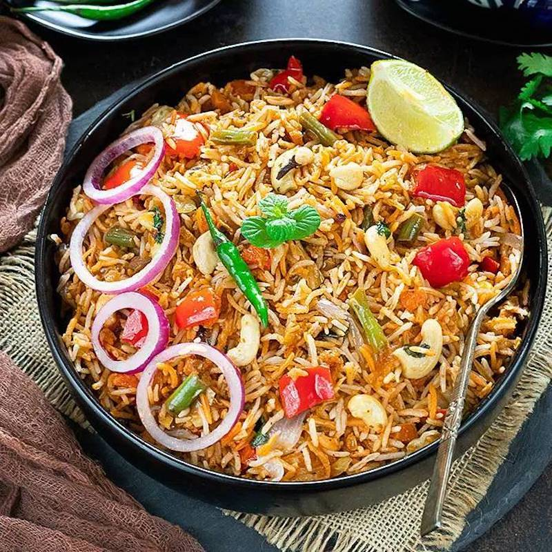

Veg Biryani Recipe

You will need:
1 cup Basmati Rice, long grain, soaked for 20 minutes in 2 cups water
3 tablespoon Milk
1 pinch Saffron (Kesar)
1 ½ tablespoon Ghee
½onion
1 tsp garlic
1 tsp ginger
¼ tsp Plain Yoghurt
¼ cup fried onions
¼ cup water
2 tablespoon Cilantro leaves
3 Green Cardamom (Elaichi)
4 Cloves (Laung)
8 Black Peppercorns
1 Potato
½cup Green Peas
1 cup Cauliflowers
½ Red bell pepper
½ cup Carrots
Click below to watch a step-by-step tutorial!
Tutorial